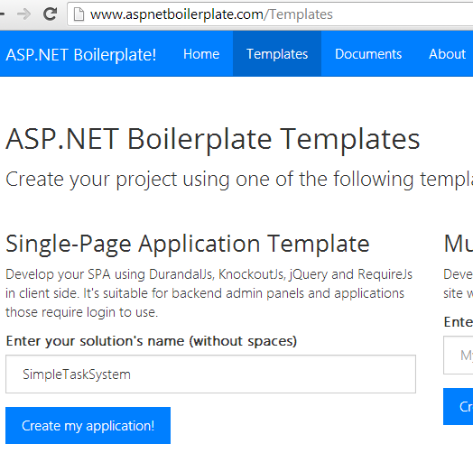
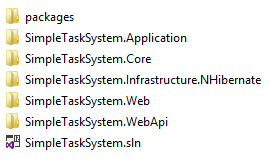
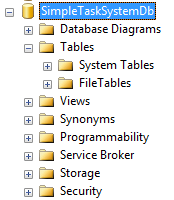
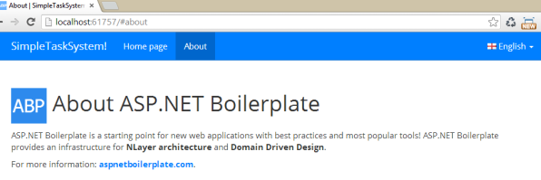
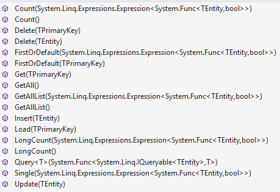
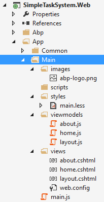
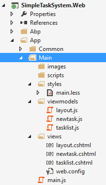

DRY - Don't Repeat Yourself! is one of the main ideas of a good developer while developing a software. We're trying to implement it from simple methods to classes and modules. What about developing a new web based application? We, software developers, have similar needs when developing enterprise web applications.
Enterprise web applications need login pages, user/role management infrastructure, user/application setting management, localization and so on. Also, a high quality and large scale software implements best practices such as Layered Architecture, Domain Driven Design (DDD), dependency injection (DI). Also, we use tools for Object-Releational Mapping (ORM), database migrations, logging... etc. When it comes to the user interface (UI), it's not much different.
Starting a new enterprise web application is a hard work. Since all applications need some common tasks, we're repeating ourselves. Many companies are developing their own Application Frameworks or Libraries for such common tasks to do not re-develop same things. Others are copying some parts of existing applications and preparing a start point for their new application. First approach is pretty good if your company is big enough and has time to develop such a framework.
As a software architect, I also developed such a framework im my company. But, there is some point it feels me bad: Many company repeats same tasks. What if we can share more, repeat less? What if DRY principle is implemented universally instead of per company? It sounds utopian, but I think there may be a starting point for that!
ASP.NET Boilerplate is a starting point for new web applications using best practices and most popular tools. It's aimed to be a solid model, a general-purpose application framework and a project template. What it does?
Beside these common infrastructure, the "Core Module" is being developed. It will provide an authentication system (implementing ASP.NET Identity Framework), a setting systems and so on.
In this article, I'll show to deleveop a simple Single-Page and Responsive Web Application using ASP.NET Boilerplate (I'll call it as ABP from now). This sample application is named as "Simple Task System" and it consists of two pages: one for list of tasks, other one is to add new tasks. A Task can be related to a person, can be completed. Screenshot of Task List in the application is shown below:
ABP provides two template to start a new project (Even if you can manually create your project and get ABP packages from nuget, template way is much more easy). Go to www.aspnetboilerplate.com/Templates to create your application from one of two templates (one for SPA, one for MPA projects):

I named my project as SimpleTaskSystem and created a SPA project. It downloaded project as a zip file. When I open the zip file, I see a solution is ready that contains assemblies (projects) for each layer of Domain Driven Design:

Created project's runtime is .NET Framework 4.5.1, I advice to open with Visual Studio 2013. The only prerequise to be able to run the project is to create a database. SPA template assumes that you're using SQL Server 2008 or later. But you can change it easily to another DBMS.
See the connection string in web.config file of the web project:
<add name="MainDb" connectionString="Server=localhost; Database=SimpleTaskSystemDb; Trusted_Connection=True;" />
You can change connection string here. I don't change the database name, so I'm creating an empty database, named SimpleTaskSystemDb, in SQL Server:

That's it, your project is ready to run! Open it in VS2013 and press F5:

Template consists of two pages: One for Home page, other is About page. It's localized in English and Turkish. And it's Single-Page Application! Try to navigate between pages, you'll see that only the contents are changing, navigation menu is fixed, all scripts and styles are loaded only once.
Now, I'll show to change the application to a Simple Task System application layer by layer.
"Responsible for representing concepts of the business, information about the business situation, and business rules" (Eric Evans). In the Domain Driven Design (DDD), the core layer is the Domain Layer. Domain Layer defines your Entities, implements your business rules and so on.
Entities are one of the core concepts of DDD. Eric Evans describe it as "An object that is not fundamentally defined by its attributes, but rather by a thread of continuity and identity". So, entities have Id's and stored in a database.
My first entity is the Task:
public class Task : Entity<long>
{
public virtual Person AssignedPerson { get; set; }
public virtual string Description { get; set; }
public virtual DateTime CreationTime { get; set; }
public virtual TaskState State { get; set; }
public Task()
{
CreationTime = DateTime.Now;
State = TaskState.Active;
}
}
It's simple class that does not need to be explained. TaskState is an enum that has membes as 'Active' and 'Completed'. Second entity is the Person:
public class Person : Entity
{
public virtual string Name { get; set; }
}
A task has a relation to a person and that's all for this simple application.
Entities implements IEntity<TPrimaryKey> interface in ABP. So, if type of your primary key is long for an Entity, it must implement IEntity<long>. If your Entity's primary key is int, you may not define primary key type and directly implement IEntity interface. In practice, you can easily derive from Entity or Entity<TPrimaryKey> classes as shown above (Task and Person). IEntity defines Id property for the Entity.
"Mediates between the domain and data mapping layers using a collection-like interface for accessing domain objects" (Martin Fowler). Repositories, in practice, are used to perform database operations for domain objects (Entities or Value Types).
Generally, a seperated repository is used for each Entity (or Aggregate root). I define repositories for Task and Person:
public interface ITaskRepository : IRepository<Task, long>
{
List<Task> GetAllWithPeople(int? assignedPersonId, TaskState? state);
}
public interface IPersonRepository : IRepository<Person>
{
}
It's good to define an interface for each Repository. Thus, we can seperate interface from implementation. A Repository interface inherits IRepository as shown above. IRepository interface defines most-used methods for repositories:

It defines basic CRUD methods. So, all repositories are automatically implement all these methods.
"Provides generic technical capabilities that support the higher layers" (Eric Evans). It's used to implement abstractions of your application using third-party libraries & frameworks such as Object-Relational Mapping. In this application, I'll use Infrastructure Layer for:
"Evolutionary Database Design: Over the last few years we've developed a number of techniques that allow a database design to evolve as an application develops. This is a very important capability for agile methodologies." Martin Fowler says in his web site. Database migration is an important technique to support this idea. It's very hard to maintain an application's database in more than one production environment without such techniques. Even if you've only one live system, it's critical.
FluentMigrator is a good tool for database migrations. It supports most common database systems. Here, my migration codes for Person and Task tables.
[Migration(2014041001)]
public class _01_CreatePersonTable : AutoReversingMigration
{
public override void Up()
{
Create.Table("StsPeople")
.WithColumn("Id").AsInt32().Identity().PrimaryKey().NotNullable()
.WithColumn("Name").AsString(32).NotNullable();
Insert.IntoTable("StsPeople")
.Row(new { Name = "Douglas Adams" })
.Row(new { Name = "Isaac Asimov" })
.Row(new { Name = "George Orwell" })
.Row(new { Name = "Thomas More" });
}
}
[Migration(2014041002)]
public class _02_CreateTasksTable : AutoReversingMigration
{
public override void Up()
{
Create.Table("StsTasks")
.WithColumn("Id").AsInt64().Identity().PrimaryKey().NotNullable()
.WithColumn("AssignedPersonId").AsInt32().ForeignKey("TsPeople", "Id").Nullable()
.WithColumn("Description").AsString(256).NotNullable()
.WithColumn("State").AsByte().NotNullable().WithDefaultValue(1) //1: TaskState.New
.WithColumn("CreationTime").AsDateTime().NotNullable().WithDefault(SystemMethods.CurrentDateTime);
}
}
In FluentMigrator, a migration is defined in a class derived from Migration. AutoReversingMigration is a shortcut if your migration can be automatically rolled back. A migration class should has MigrationAttribute. It defines version number of the migration class. All migrations are applied ordered by this version number. It can a any long number. I use a number that identify the migration class's creation date plus an incremental value for same day. It's completely up to you. Only important thing is their order.
FluentMigrator stores latest applied version number in a table in the database. So, it applies only migrations those are bigger than the version of the database. By default, it uses 'VersionInfo' table. If you want to change the table name, you can create such a class:
[VersionTableMetaData]
public class VersionTable : DefaultVersionTableMetaData
{
public override string TableName
{
get
{
return "StsVersionInfo";
}
}
}
As you see, I write a prefix Sts (Simple Task System) for all tables. That is important for a modular application so all modules can have their specific prefix to identify the module-specific tables.
To create database my tables, I use Migrate.exe tool of FluentMigrator with such a 'command line' command:
Migrate.exe /connection "Server=localhost; Database=SimpleTaskSystemDb; Trusted_Connection=True;" /db sqlserver /target "SimpleTaskSystem.Infrastructure.NHibernate.dll"
For a shortcut, ABP template includes RunMigrations.bat file. After I compile the project in Debug mode, I run the "RunMigrations.bat":

As you see, two migration file are executed and tables are created:

For more information on FluentMigrator, see it's web site [4].
In order to get/store Entities into database, we should map Entities with database tables. NHibernate has several options to accomplish that. Here, I'll use Fluent Mapping (You can use conventional auto-mapping, see FluentNHibernate's web site [5]):
public class PersonMap : EntityMap<Person>
{
public PersonMap()
: base("StsPeople")
{
Map(x => x.Name);
}
}
public class TaskMap : EntityMap<Task, long>
{
public TaskMap()
: base("StsTasks")
{
Map(x => x.Description);
Map(x => x.CreationTime);
Map(x => x.State).CustomType<TaskState>();
References(x => x.AssignedPerson).Column("AssignedPersonId").LazyLoad();
}
}
EntityMap is a class of ABP that automatically maps Id property and gets table name in the constructor. So, I'm deriving from ABP and mapping other properties.
I defined interfaces for each Entity in the domain layer. Here, I'll implement repositories in NHibernate. It's pretty easy:
public class PersonRepository : NhRepositoryBase<Person>, IPersonRepository
{
}
public class TaskRepository : NhRepositoryBase<Task, long>ITaskRepository
{
public List<Task> GetAllWithPeople(int? assignedPersonId, TaskState? state)
{
var query = GetAll();
if (assignedPersonId.HasValue)
{
query = query.Where(task => task.AssignedPerson.Id == assignedPersonId.Value);
}
if (state.HasValue)
{
query = query.Where(task => task.State == state);
}
return query
.OrderByDescending(task => task.CreationTime)
.Fetch(task => task.AssignedPerson)
.ToList();
}
}
NhRepositoryBase implements all methods those are defined in IRepository interface. So, you must only implement your custom methods as I implemented for GetAllWithPeople. GetAll() method returns IQueryable<TEntity>, so you can write additional conditions until invoke ToList().
That's all, you can use repositories for database operations for now.
"Defines the jobs the software is supposed to do and directs the expressive domain objects to work out problems" (Eric Evans). Application layer does not includes domain information or business rules an ideal world. It mediates between presentation layer and domain layer.
Application services provides base funictionality of the application layer. It gets data transfer objects as arguments and returns data transfer objects. Returning Entities has many problems (Because of data hiding, serialization, lazy loading... etc.). I strongly recommend to not get/return Entities from Application services. Thus, Presentation layer is completely isolated from Domain layer.
So, let's start by easy, person application service:
public interface IPersonAppService : IApplicationService
{
GetAllPeopleOutput GetAllPeople();
}
All application services implements IApplicationService by convention. It ensures dependency injection and provides some built-in features of ABP. I defined only one method GetAllPeople() and it returns a DTO named GetAllPeopleOutput. I name DTOs as like that: method name plus Input or Output postfix. See GetAllPeopleOutput class:
public class GetAllPeopleOutput : IOutputDto
{
public List<PersonDto> People { get; set; }
}
An output DTO implements IOutputDto (and it inherits IDto). It does nothing but used to identify DTOs by convention. PersonDto is another DTO class to pass a Person information to the presentation layer:
public class PersonDto : EntityDto
{
public string Name { get; set; }
}
EntityDto is another helper class of ABP that defines Id property and implements IDto interface automatically. IPersonAppService is implemented as shown below:
public class PersonAppService : IPersonAppService
{
private readonly IPersonRepository _personRepository;
public PersonAppService(IPersonRepository personRepository)
{
_personRepository = personRepository;
}
public GetAllPeopleOutput GetAllPeople()
{
return new GetAllPeopleOutput
{
People = Mapper.Map<List<PersonDto>>(_personRepository.GetAllList())
};
}
}
PersonAppService gets IPersonRepository in it's constructor. ABP's built-in dependency injection system handles it using Castle Windsor. All repositories and application services are automatically registered to IOC (Inversion of Control) container as transient objects. So, you're not thinking on DI details.
GetAllPeople() method simply gets a list of all people (using ABP's out of the box implementation) from database and converts it to list of PersonDto objects using AutoMapper library. AutoMapper makes it incredibly easy to map one class to other using conventions (and configurations if needed). I just defined a single line of code to configure mapping:
Mapper.CreateMap<Person, PersonDto>();
This code works when application starts and creates mapping. Then, when I need, I call the Mapper.Map method to create a PersonDto object using an existing Person object. To get more informatin about AutoMapper, see it's web site [7]. Other application service is TaskAppService implemented as below:
public class TaskAppService : ITaskAppService
{
private readonly ITaskRepository _taskRepository;
private readonly IPersonRepository _personRepository;
public TaskAppService(ITaskRepository taskRepository, IPersonRepository personRepository)
{
_taskRepository = taskRepository;
_personRepository = personRepository;
}
[UnitOfWork]
public void UpdateTask(UpdateTaskInput input)
{
var task = _taskRepository.Get(input.TaskId);
if (input.State.HasValue)
{
task.State = input.State.Value;
}
if (input.AssignedPersonId.HasValue)
{
task.AssignedPerson = _personRepository.Load(input.AssignedPersonId.Value);
}
}
public void CreateTask(CreateTaskInput input)
{
var task = new Task { Description = input.Description };
if (input.AssignedPersonId.HasValue)
{
task.AssignedPerson = _personRepository.Load(input.AssignedPersonId.Value);
}
_taskRepository.Insert(task);
}
//...other methods...
}
In the UpdateTask method, 'm getting the Task Entity from task repository and setting changed properties. State or/and AssignedPersonId might be changed. Notice that I did not called _taskRepository.Update or any other method to save changes to database. I defined ABP's UnitOfWork attribute for the UpdateTask method. It basically opens a database connection and begins transaction at the beginning of the method and saves all changes to database at the end of the method automatically. It rollbacks the transaction if an Exception is thrown in the execution of the method. If a UnitOfWork method calls another UnitOfWork method, they use the same transaction.
In the CreateTask method, I created a new task and Inserted to task repository. There is no need for UnitOfWork attribute here since Repository's Insert method manages db connection and transaction itself (All repository methods are unit of work by default). UnitOfWork mechanism in ABP is very similar to mechanism I described in this article. For more informatin, you can read it.
Application services are consumed by Presentation Layer. In a Single-Page application, all datas are sent/received using AJAX between javascript and the server. ABP extremely simplifies calling an application service method from javascript. So, how it does this, let me explain...
An application service can not directly called by javascript. We may use ASP.NET Web API to expose services to clients (There are many other frameworks for that such as Web Services, WCF, SignalR and so on). So, there may be such a flow:

Javascript calls a Web API controller's action via AJAX, the Web API controller's action then calls corresponding application service's method, gets result and returns to the client. This is pretty robotic.ABP automates that and can dynamically create a Web API controller for an application service. Here the all code to create two Web API controller for my two Application Service: task service and person service (These codes are located in WebApi project in the solution).
DyanmicApiControllerBuilder
.For<ITaskAppService>("tasksystem/task")
.Build();
DyanmicApiControllerBuilder
.For<IPersonAppService>("tasksystem/person")
.Build();
Thus, all methods of task and person application services are exposed to clients using ASP.NET Web API. In the Presentation Layer section, We will see how to call these Web API controllers with ABP's dynamic javascript proxies.
"Responsible for showing information to the user and interpreting user's commands" (Eric Evans). The most obvious layer of the DDD is the Presentation Layer since we can see it, we can click it :).
Wikipedia says about SPA:
A single-page application (SPA), also known as single-page interface (SPI), is a web application or web site that fits on a single web page with the goal of providing a more fluid user experience akin to a desktop application.
In an SPA, either all necessary code – HTML, JavaScript, and CSS – is retrieved with a single page load, or the appropriate resources are dynamically loaded and added to the page as necessary, usually in response to user actions. The page does not reload at any point in the process, nor does control transfer to another page, although modern web technologies (such as those included in HTML5) can provide the perception and navigability of separate logical pages in the application. Interaction with the single page application often involves dynamic communication with the web server behind the scenes.
There are many frameworks and libraries those provide an infrastructure to build SPAs. Durandal [8] is one of these frameworks and I think it's is a very successful open source project. It's built on successful and mostly used projects: jQuery (used for DOM manipulation and AJAX), knockout.js (used for MVVM, binding javascript models with HTML) and require.js (used to manage javascript dependencies and loading javascript from server dynamically). For mode information and rich documentation, visit to Durandal's web site.
In Durandal, a part of a page consists of a view and a viewmodel. For ABP startup template, files to create SPA is shown below:

There is three views: layout, home and about. Layout provides menu and container for pages. home and about are views loaded dynamically into page. Surely, I changed views and models in order to create my Simple Task System application.
After changed views, here the all view and viewmodels:

I have a layout and two-views: task list and new task. Let's begin to investigate views.
In the task list, there is a list of all tasks with task description, assigned person and creation date. There is a combobox to show all/avtice/completed tasks. Completed tasks are shown as gray (with an OK icon), active tasks are shown as bold (with a minus icon). Only completed task is the "Complete the Codeproject article!" that's assigned to me :)
Let me to start with the view model. View model is used to communicate with the server to perform user actions (listing tasks, changing combobox, clicking the icon to change status of the task) and provide a model to show in the view.
define(['service!tasksystem/task'],
function (taskService) {
return function () {
var that = this; //an alias of this
that.tasks = ko.mapping.fromJS([]); //list of tasks
that.localize = abp.localization.getSource('SimpleTaskSystem');
that.selectedTaskState = ko.observable(0); //'All tasks' option is selected in combobox as default
that.activate = function () {
that.refreshTasks();
};
that.refreshTasks = function () {
taskService.getTasks({
state: that.selectedTaskState() > 0 ? that.selectedTaskState() : null
}).done(function (data) {
ko.mapping.fromJS(data.tasks, that.tasks);
});
};
that.changeTaskState = function (task) {
var newState;
if (task.state() == 1) {
newState = 2;
} else {
newState = 1;
}
taskService.updateTask({
taskId: task.id(),
state: newState
}).done(function () {
task.state(newState);
abp.notify.info(that.localize('TaskUpdatedMessage'));
});
};
};
});
First line calls require.js's define function to register the module and declare dependencies. a dependency is generally an another module (even maybe a view model). 'service!tasksystem/task' is a special syntax of ABP that reference to the dynamic Web API controller for task application service (remember how I defined the task service in Dynamic Web API Controllers section).
Second parameter of define function is the module itself. It should be a function that defines the module. It's parameters are automatically filled by Durandal using your dependency list.
that.tasks is a knockout observable array. It's created using knockout.mapping's function. that.localize is used to get a function to be used to localize in javascript. It's a feature of ABP to localize texts dynamically in javascript. that.selectedTaskState is an observanle that is binded to combobox to show all/active/completed tasks.
activate is a special function of Durandal. This function is called automatically by Durandal when this view is activated. So, we can write some codes to run when user enters the view.
In the refreshTasks method, I called Task Application Service's getTasks method to load tasks from server. To call an application service from javascript is that easy through ABP's dynamic Web API controller and dynamic javascript client proxies. getTasks function gets same arguments of TaskAppService.GetTasks. The function will return a jQuery promise, so you can write a done handler to get return value of the GetTasks method of the task application service. So, calling a method of an application service from javascript is that easy by ABP. taskService.getTasks javascript call also handles errors and show error message to the used if needed. If your done handler is called, you can be sure there is no error. In the done handler, I added retrived tasks to the that.task array.
changeTaskState is also pretty similar. It's used to change a task's state from active to completed or vice verse. In the done handler, you see the usage of localization. See Localization section for details.
TODO: View of Task list.
TODO: New task!
ABP provides a strong and elastic localization system. You can store your localization texts in resource files, XML files or even in a custom place. In this section, I'll show using XML files. Simple Task System project includes XML files in the Localization folder:

Here, the content of the SimpleTaskSystem.xml:
<?xml version="1.0" encoding="utf-8" ?>
<localizationDictionary culture="en">
<texts>
<text name="TaskSystem" value="Task System" />
<text name="TaskList" value="Task List" />
<text name="NewTask" value="New Task" />
<text name="Xtasks" value="{0} tasks" />
<text name="AllTasks" value="All tasks" />
<text name="ActiveTasks" value="Active tasks" />
<text name="CompletedTasks" value="Completed tasks" />
<text name="TaskDescription" value="Task description" />
<text name="EnterDescriptionHere" value="Task description" />
<text name="AssignTo" value="Assign to" />
<text name="SelectPerson" value="Select person" />
<text name="CreateTheTask" value="Create the task" />
<text name="TaskUpdatedMessage" value="Task has been successfully updated." />
<text name="TaskCreatedMessage" value="Task {0} has been created successfully." />
</texts>
</localizationDictionary>
It's a simple XML file includes name-value pairs for all localizable texts. culture attribute defines culture of the file. There is also an XML file for Turkish localization in the solution. Localization files should be registered to ABP in order to be usable in the C# and javascript. First, I defined a class derived from XmlLocalizationSource:
public class SimpleTaskSystemLocalizationSource : XmlLocalizationSource
{
public SimpleTaskSystemLocalizationSource()
: base("SimpleTaskSystem", HttpContext.Current.Server.MapPath("/Localization/SimpleTaskSystem"))
{
}
}
A localization source must be a unique name (SimpleTaskSystem in this project). Thus, different sources (stored in different format) can be used in the application. XmlLocalization source also needs a folder (/Localization/SimpleTaskSystem in this project) to read localization files. Lastly, we must register this class to ABP localization system before use it:
LocalizationHelper.RegisterSource<SimpleTaskSystemLocalizationSource>();
Then we can get localized texts when we need. In C#, we have two option to get a localizaed text:
//Use directly
var s1 = LocalizationHelper.GetString("SimpleTaskSystem", "NewTask");
//Use after get source
var source = LocalizationHelper.GetSource("SimpleTaskSystem");
var s2 = source.GetString("NewTask");
It returns the localized text in current language (by using CurrentUICulture of the current thread). There are also overrides to get text in a specific culture. There is a similar API in the javascript to get localized texts:
//Use directly
var s1 = abp.localization.localize('NewTask', 'SimpleTaskSystem');
//Use after get source
var source = abp.localization.getSource('SimpleTaskSystem');
var s2 = source('NewTask');
These methods also gets the localized text in the current language.
...
[1] ASP.NET Boilerplate official website: http://www.aspnetboilerplate.com
[2] Book: "Domain Driven Design: Tackling Complexity in the Heart of Software" by Eric Evans.
[3] Martin Fowler's web site: http://martinfowler.com
[4] Fleunt Migrator: https://github.com/schambers/fluentmigrator
[5] FluentNHibernate: http://www.fluentnhibernate.org/
[6] Eric Evans: http://dddcommunity.org/tag/eric-evans/
[7] AutoMapper: http://automapper.org/
[8] Durandaljs: http://durandaljs.com/